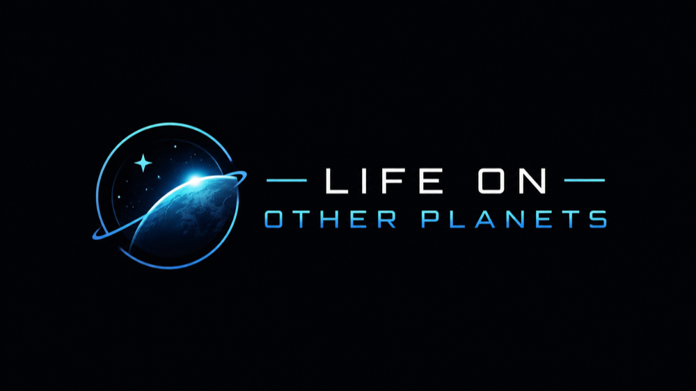

A free online project where anyone can explore a map of the real stars near us, study real data from NASA's planet-hunting telescopes, and help decide which distant worlds are the best places to look for life. Built by the Griswold family as a for-fun, for-real science project.
Computers are fast, but people are better at spotting the unexpected. Four steps, a few seconds each — no account, no email.
Both, on purpose. The exploring, charting, and naming are the fun wrapper; underneath, you're doing a real task scientists need. The fun is attached to genuine work, not a substitute for it.
No — you can take part with just a name and an avatar, no email required. We collect almost nothing and public names are moderated.
You can give an honorary nickname to a world you helped chart, and it lives on our map as a thank-you. To be clear, that's a celebratory nickname, not an official name — official naming is handled by the International Astronomical Union.
Yes, it's free. It runs on free, public data: confirmed-planet data from the NASA Exoplanet Archive, and — for the radio-astronomy phase coming later — the Breakthrough Listen open data initiative.
The Griswold family in Atlanta. This is their passion project: use free public data and a lot of curious people to chase a big question, and have fun doing it.
An exploration by the Griswolds. Built on free, public data from the NASA Exoplanet Archive and the Breakthrough Listen initiative. A citizen-science project — welcoming to newcomers, honest about what it can and can't do. · Scoreboard · Privacy & Terms